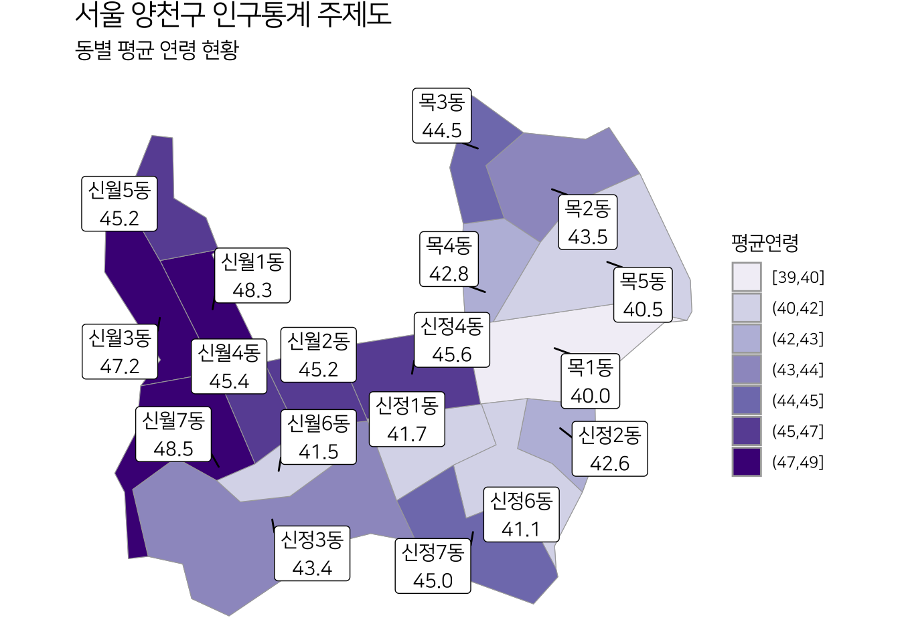

thematic_map(
zoom = c("mega", "cty", "admi"),
subset = NULL,
stat = NULL,
polygon = TRUE,
point = FALSE,
label = NULL,
col_cnt = 9,
palette = "YlOrRd",
line_col = "darkgray",
fill = "lightblue",
point_col = "blue",
title = NULL,
subtitle = NULL,
legend_pos = c("none", "right", "left", "bottom", "top"),
base_family = "NanumSquare"
)bitSpatial 사용하기
주제도 그리기
- thematic_map() 함수 원형
- 광역시도 레벨
thematic_map(stat = "인구수",
title = "광역시도별 인구분포 현황",
legend_pos = "right")- 시군구 레벨
thematic_map(zoom = "cty", stat = "인구수",
title = "시군구별 인구분포 현황",
legend_pos = "right")- 제주특별자치도 읍면동 레벨
thematic_map(zoom = "admi", stat = "병원수",
subset = mega_nm %in% "제주특별자치도",
title = "제주도 병원 현황")- 제주특별자치도 추자도 제거
thematic_map(zoom = "admi", stat = "병원수",
subset = mega_nm %in% "제주특별자치도" & !admi_nm %in% "추자면",
title = "제주도 병원 현황")- 가구수
thematic_map(zoom = "admi", stat = "가구수",
subset = mega_nm %in% "제주특별자치도" & !admi_nm %in% "추자면",
title = "제주도 가구수 현황")- 여성인구수
thematic_map(zoom = "admi", stat = "여성인구수",
subset = mega_nm %in% "제주특별자치도" & !admi_nm %in% "추자면",
title = "제주도 여성인구수 현황")- point
thematic_map(zoom = "admi",subset = cty_nm %in% "노원구",
stat = "household", line_col = "black", fill = "grey90",
polygon = FALSE, point = TRUE, point_col = "Red")Warning in st_point_on_surface.sfc(sf::st_zm(x)): st_point_on_surface may not
give correct results for longitude/latitude data- point + polygon
thematic_map(zoom = "admi",subset = cty_nm %in% "노원구",
stat = "household",
polygon = TRUE, point = TRUE, legend_pos = "right")Warning in st_point_on_surface.sfc(sf::st_zm(x)): st_point_on_surface may not
give correct results for longitude/latitude data- label = “name”
thematic_map(zoom = "admi", subset = mega_nm == "서울특별시" & cty_nm %in% "양천구",
stat = "age_mean", label = "name",
title = "서울 양천구 인구통계 주제도",
subtitle = "동별 평균 연령 현황", palette = "Purples", legend_pos = "right")Warning in st_point_on_surface.sfc(sf::st_zm(x)): st_point_on_surface may not
give correct results for longitude/latitude data- label = “all”
thematic_map(zoom = "admi", subset = mega_nm == "서울특별시" & cty_nm %in% "양천구",
stat = "age_mean", label = "all",
title = "서울 양천구 인구통계 주제도",
subtitle = "동별 평균 연령 현황", palette = "Purples", legend_pos = "right")Warning in st_point_on_surface.sfc(sf::st_zm(x)): st_point_on_surface may not
give correct results for longitude/latitude data
위치정보 시각화
- 초중고등학교 위치정보
- school
- 약국 위치정보
- pharmacy_info
- 병원 위치정보
- hospital_info
- 상가 위치정보
- 서울특별시: store_info_seoul
- 경기: store_info_gyeonggi
- 중부지역: store_info_middle
- 남부지역: store_info_south
- 서울시 입시·교과학원 분포 시각화 소스
pos_edu <- store_info_seoul |>
filter(industry_s_nm %in% "입시·교과학원") |>
st_as_sf(coords = c("lon", "lat"), crs = 4326)
ggplot() +
stat_density_2d(data = pos_edu,
mapping = aes(x = purrr::map_dbl(geometry, ~.[1]),
y = purrr::map_dbl(geometry, ~.[2]),
fill = stat(density)),
geom = 'tile', contour = FALSE, alpha = 0.7) +
scale_fill_viridis_c(option = "viridis", direction = -1) +
geom_sf(data = cty |> filter(mega_nm %in% "서울특별시"),
color = "grey30", fill = NA, linewidth = 0.8) +
geom_sf(data = pos_edu, color = "blue", size = 0.1) +
xlim(126.75, 127.22) + ylim(37.42, 37.71) +
labs(title = "서울특별시 입시·교과학원 분포 현황",
subtitle = "출처: 공공데이터포털의 소상공인시장진흥공단_상가(상권)정보") +
theme_custom_map()Warning: `stat(density)` was deprecated in ggplot2 3.4.0.
ℹ Please use `after_stat(density)` instead.Warning: Removed 396 rows containing missing values (`geom_tile()`).공간 데이터 연산
- optimal_map_size() 함수원형
optimal_map_size(map,
width = 800, height = NULL)- 플롯팅할 지도의 종횡비를 고려하여, 최적의 이미지 크기 계산
optimal_map_size(mega)$width
[1] 800
$height
[1] 853optimal_map_size(
mega, height = 600)$width
[1] 800
$height
[1] 600optimal_map_size(
mega |>
filter(mega_nm %in% "서울특별시"))$width
[1] 800
$height
[1] 662- calc_distance() 함수원형
calc_distance(
lon1,
lat1,
lon2,
lat2,
proj = c("WGS84", "Bessel", "GRS80", "KATECH")
)- 두 좌표의 거리를 미터(m) 단위로 계산
calc_distance(132.12, 37.23, 133.45, 37.32)[1] 118105- 함수원형
position2mega(x, y,
proj = c("WGS84", "Bessel", "GRS80", "KATECH"))
position2cty(x, y,
proj = c("WGS84", "Bessel", "GRS80", "KATECH"))
position2admi(x, y,
proj = c("WGS84", "Bessel", "GRS80", "KATECH"))- 경위도 좌표계 위치정보(경도, 위도)로 행정구역 정보를 구함
x <- c(126.9691, 127.4926)
y <- c(37.56825, 36.23795)
# 광역시도 정보 구하기
position2mega(x, y) lon lat mega_cd mega_nm
1 126.9691 37.56825 11 서울특별시
2 127.4926 36.23795 44 충청남도# 시군구 정보 구하기
position2cty(x, y) lon lat mega_cd mega_nm cty_cd cty_nm
1 126.9691 37.56825 11 서울특별시 11110 종로구
2 127.4926 36.23795 44 충청남도 44710 금산군# 읍면동 정보 구하기
position2admi(x, y) lon lat mega_cd mega_nm cty_cd cty_nm admi_cd admi_nm
1 126.9691 37.56825 11 서울특별시 11110 종로구 1111053000 사직동
2 127.4926 36.23795 44 충청남도 44710 금산군 4471039000 추부면bitSpatial 응용
- plotly와 bitSpatial을 활용한 대시보드 구현
- bitReport와 bitSpatial을 활용한 정형 보고서 작성